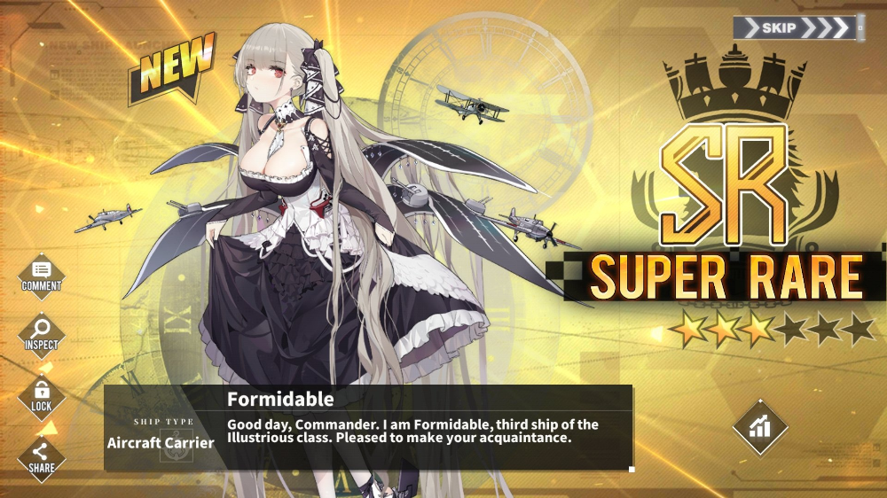

Formidable

|
Formidable is a protagonist in Azur Lane, introduced by the event Empyreal Tragicomedy.
Her real life counterpart is HMS Formidable, an aircraft carrier for Royal Navy ordered for World War II. She could be built
in limited construction during the event which introduced her. As a playable character, she is also a lady from Royal Navy,
but appreciates having some fun. She is very caring, preparing some tea and food for the commander when they need to take a
break. She has no mercy for enemies, and if ever someone dares calling her "lumbering", she totally loses her temper,
Carabiniere being one of the victims from this. |